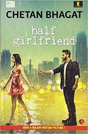
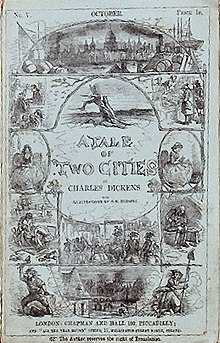
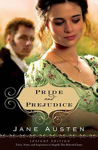

Half Girlfriend
Half Girlfriend is an Indian English coming of age, young adult romance novel by Indian author Chetan
Bhagat. The novel, set in rural Bihar, New Delhi, Patna, and New York, is the story of a Bihari boy
in quest of winning over the girl he loves. This is Bhagat's sixth novel which was released on 1
October 2014 by Rupa Publications. The novel has also been published in Hindi and Gujarati.
The Alchemist
The Alchemist (Portuguese: O Alquimista) is a novel by Brazilian author Paulo Coelho that was
first published in 1988. Originally written in Portuguese, it became a widely translated international
bestseller.An allegorical novel, The Alchemist follows a young Andalusian shepherd in his journey to the
pyramids of Egypt, after having a recurring dream of finding a treasure there.
Rain Rising Poems
Rain Rising contains poems ranging from the family
tree to reflective ones on a miscarriage, or Gandhari - poems
that reach beyond personal and even gender issues. This is a book
about a poet's explorations of her physical universe, her roots and
her ancestry.

A tale of two cities
A Tale of Two Cities is an 1859 historical novel by Charles Dickens, set in London and
Paris before and during the French Revolution. The novel tells the story of the French
Doctor Manette, his 18-year-long imprisonment in the Bastille in Paris and his release
to live in London with his daughter Lucie, whom he had never met. The story is set against
the conditions that led up to the French Revolution and the Reign of Terror.
The Hunger Games
The Hunger Games is a 2008 dystopian novel by the American
writer Suzanne Collins. It is written in the voice of 16-year-old
Katniss Everdeen, who lives in the future, post-apocalyptic nation
of Panem in North America. The Capitol, a highly advanced metropolis,
exercises political control over the rest of the nation. The Hunger
Games is an annual event in which one boy and one girl aged 12–18 from
each of the twelve districts surrounding the Capitol are selected by
lottery to compete in a televised battle royale to the death.

pride and prejudice
Pride and Prejudice is an 1813 romantic novel of manners written by Jane Austen.
The novel follows the character development of Elizabeth Bennet, the dynamic
protagonist of the book who learns about the repercussions of hasty judgments
and comes to appreciate the difference between superficial goodness and actual
goodness. Its humour lies in its honest depiction of manners, education, marriage,
and money during the Regency era in England.